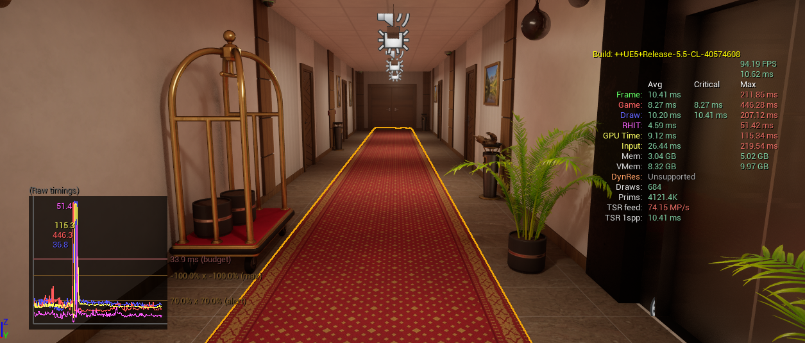
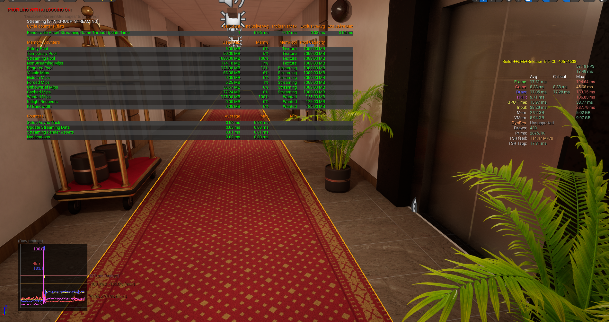

Gameplay Design
Defined the observation loop and the choices that move it forward.

A compact horror experiment about noticing the one thing that changed.
The project started as a small challenge: could one elevator become a complete psychological space? The player fantasy was to become more observant than the environment, learning to trust memory while the rules quietly shifted.

The first version relied on surprise instead of pattern recognition. The design challenge was to make every anomaly legible enough to learn from, while keeping the player uncertain about what would happen next.
Defined the observation loop and the choices that move it forward.
Created a consistent language for anomalies and progression.
Used a repeating space to make small changes feel large.
Tuned surprise so it supported curiosity instead of frustration.
Tracked which details players remembered without prompting.
Protected the central idea while working inside a short deadline.
This flowchart makes the player’s observation loop visible at a glance.
Select a stage to reveal the design insight.
 Wireframe
Wireframe
FinalWhen anomalies appeared without a readable rhythm, players felt tested by the game rather than invited into it. We gave the changes a stronger visual and narrative relationship.
“I knew something was wrong, but I did not know what to do.”
The short deadline made prioritization visible. We cut systems that did not strengthen observation, shared responsibilities clearly, and used every test as a decision rather than a verdict.
Lesson 01Players need a pattern before they can fear a break.
Lesson 02Small spaces reward precise design.
Lesson 03Fast iteration can still be thoughtful.
I would keep the single-space constraint and sharpen the first three minutes. I would improve the feedback around incorrect observations so failure teaches the player how to look again.
Back to all projects →
